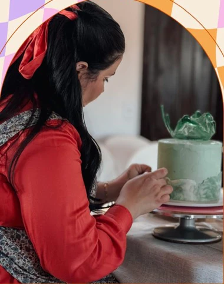

VanessaEspecial
Mil folhas de morango
Como a irmã da Camila: inúmeras camadas.


Bolos artesanais no North Shore, MA
Mil folhas de morango
Como a irmã da Camila: inúmeras camadas.

Pistache e frutas vermelhas
O sabor favorito de quem tem o coração enorme.

Puro chocolate
Inspirado no bolo do filme.
 Brigadeiros12 a 100 un.
Brigadeiros12 a 100 un. Biscoitosdecorados
Biscoitosdecorados
Confeiteira, 32 anos, do interior de São Paulo. Uma homenagem à avó.
conheça a história →